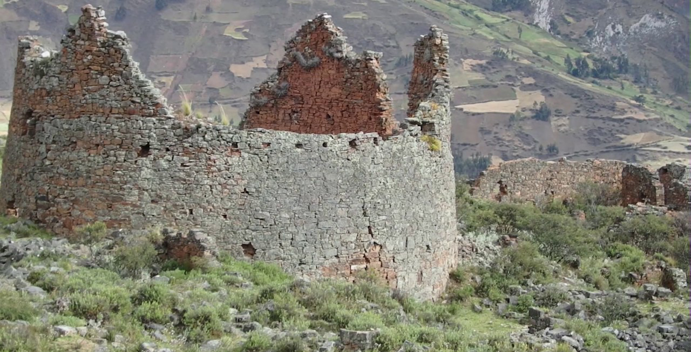

Nuevo
NEVADO DE JANCAPANPA
Amanece en Pomabamba. Las calles de esta provincia construidas en una inmensa llanura andina, permanecen durmiendo, pero a medida que el sol se levanta, las sombras de la noche empiezan a desaparecer y con ello un pueblo entero despierta. Escucho cánticos de los pájaros, un gallo y muchas voces, observo señoras que llegan con pastos para las primeras ventas del día y al preguntarles, me responden que allá en la plazuela de Yanapampa, me espera una combi; camino unas cuantas cuadras hacía el norte y veo a muchos profesores que buscan la forma de acomodarse en la combi para viajar.
Viajar . Naturaleza Pura
Septiembre 20, 2023
36 Comentarios
Por Nat
Nuevo
PLAZA DE ARMAS DE POMABAMBA
POMABANBA CAPITAL FOLCKÓRICA DE ANCASH Pomabamba, fundada como San Juan Bautista de Pomabamba en 1574, es una ciudad peruana capital del distrito y de la provincia homónimos, en el departamento de Áncash. Al año 2023, cuenta con una población aproximada de 8.000 habitantes, siendo la aglomeración urbana más grande y poblada de la Zona de Conchucos y la octava de la región. Se localiza a 2959 m s. n. m. Posee un clima templado-frío con temperaturas promedio en verano de 20° y en invierno de 15°.
Creative . Design . Penberton C Bazán
Septiembre 20, 2023
48 Comentarios
Por administrador Sam
NEVADO DE SAFUNA
SAFUNA: PARAÍSO ESCONDIDO
La laguna Safuna Alta está ubicada geográficamente entre las coordenadas: 8°, 50’, 16’’ de latitud Sur y 77°, 37’’ 6’’ de longitud Oeste. Altitudinalmente se encuentra a 4 450 metros sobre el nivel del mar, así que hace frío, por lo tanto les recomendamos ir abrigados.
Está considerada como laguna principal, pues es una de las mejores del circuito turístico. Además, su ubicación es en una cubeta natural. Vengan a conocer este bello lugar, escondido en nuestra tierra pomabambina.
Laguna . Nevado
Septiembre 20, 2023
24 Comentarios
Por John Walker
PARQUE DE CURAYACU
PARQUE DE CURAYCU ... Ubicado en el sector este Pomabamba, justo por debajo de frondosos y verdes eucaliptos, no deja indiferente a nadie. Una escenografía placentera, a ratos en silencio, pero la mayor parte de las 24 horas del día con bastante movimiento. Los niños y jóvenes se dan cita para poder pasar momentos de serenidad. Un símbolo pomabambino que sin duda deja muchas huellas en el recuerdo.
Una hermosa estructura . Diseño
Septiembre 19, 2023
72 Comentarios
Por JHOHAN
YAINO
Después de Chavín de Huántar, es Yayno el complejo arquitectónico más portentoso de Áncash. Se ubica en la antigua región de Conchucos que se extiende por el flanco oriental de la Cordillera Blanca y el curso del río Marañón.
No obstante que fue visitado por Pedro Rojas Ponce en los años 30 a instancias de su maestro Julio C. Tello, puede decirse que Yayno sigue inédito e ignorado, a pesar de que por su condición ciclópea es, uno de los monumentos más extensos del Perú antiguo.
Yayno está ubicado a 4 075 m.s.n.m., en una pendiente próxima a la cima de una alta montaña denominada Pañajirca, que dista de Pomabamba aproximadamente 25 kilómetros. Se trata de un conglomerado arquitectónico constituido por construcciones de planta tanto rectangular como circular, por plazoletas y por graderías que dan acceso a la cima luego de franquear portadas de las que lamentablemente sólo quedan vestigios
Coloso YAINO
...
Creative . Arquitectura .Pisaje
Agosto 31, 2023
84 Comentarios
Por administrador Sam

Garway
Los restos arqueológicos de Garway se encuentra en el Distrito de Huayllán Provincia de Pomabamba departamento de Ancash, es otro atractivo de la Provincia despues del Gran Yayno
Arquitectura . Paisaje
Septiembre 20, 2023
96 comentarios
Administrado por Sam 2